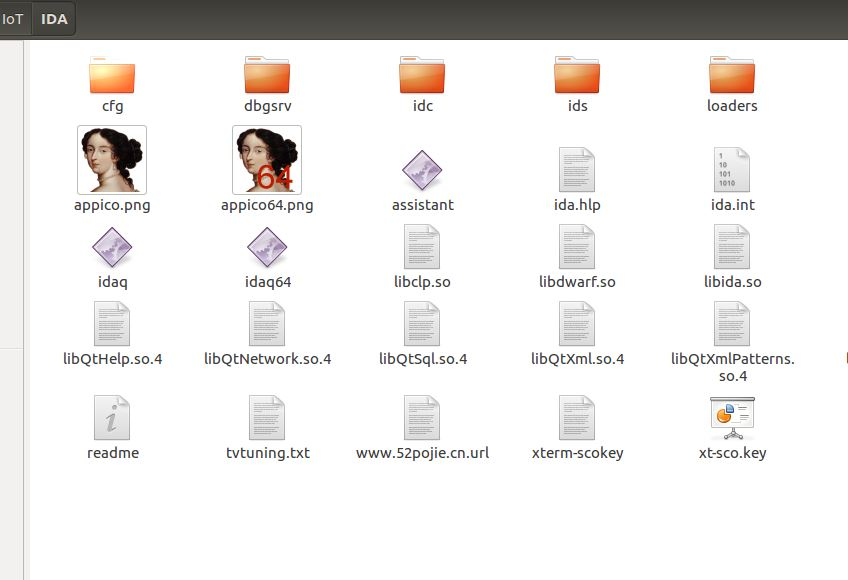

前言
最近在看《揭秘家用路由器0day漏洞挖掘技术》，根据书中的环境搭建遇到了很多问题，这里做一个详细的记录。
操作系统为ubuntu16.04
Linux下IDA安装
1.下载IDA Linux版本
链接：https://pan.baidu.com/s/1tldvJWaPQxab9EdCvltBqw
提取码：bvjd
此版本直接解压可用

2.安装依赖
由于此版本为32位序安装以下32位依赖
1 | sudo apt-get install libc6-i686:i386 libexpat1:i386 libffi6:i386 libfontconfig1:i386 libfreetype6:i386 libgcc1:i386 libglib2.0-0:i386 libice6:i386 libpcre3:i386 libpng12-0:i386 libsm6:i386 libstdc++6:i386 libuuid1:i386 libx11-6:i386 libxau6:i386 libxcb1:i386 libxdmcp6:i386 libxext6:i386 libxrender1:i386 zlib1g:i386 libx11-xcb1:i386 libdbus-1-3:i386 libxi6:i386 libsm6:i386 libcurl3:i386` |
3.运行IDA
1 | ./idaq 或./ida164 |
4.插件安装
1 | $ git clone https://github.com/devttys0/ida.git |
Binwalk安装
直接安装
1 | $ sudo apt-get update |
使用此方法安装的binwalk不完整，在提取固件时会失败。
完整版binwalk安装
1 | $ sudo apt-get update |
1 | 提取固件的文件系统： |
QEMU安装
介绍
QEMU是一个托管的虚拟机镜像，它通过动态的二进制转换，模拟CPU，并且提供一组设备模型，使它能够运行多种未修改的客户机OS，可以通过与KVM（kernel-based virtual machine开源加速器）一起使用进而接近本地速度运行虚拟机（接近真实计算机的速度）。
QEMU还可以为user-level的进程执行CPU仿真，进而允许了为一种架构编译的程序在另外一种架构上面运行（借由VMM的形式）。
qemu安装
1 | sudo apt-get install qemu |
在用 chroot 来定义路由器固件的根目录，以便程序运行能加载到相应的 lib 库时，但使用 qemu-mips 会报错，原因在于qemu-mips是动态链接的，使用chroot改变根目录后，qemu-mips会找不到动态链接库。
1 | $ ldd /usr/bin/qemu-mips |
所以要使用qemu-mips-static。
chroot使用：
先把qemu-mips-static复制到文件系统目录下:
再使用chroot改变根目录，qemu-mips-static运行mips应用
1 |
|
交叉编译环境 buildroot 的安装
1 | wget http://buildroot.uclibc.org/downloads/snapshots/buildroot-snapshot.tar.bz2 |
配置如下：
Target Architecture改为”MIPS”大端小端自行选择:
另外在Toolschain中要将Kernel Headers的版本改为自己系统的版本

保存配置后退出进行编译：
1 | make |